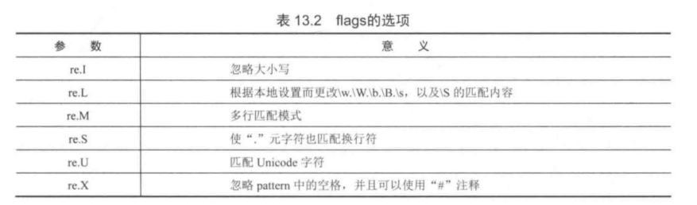

Contents
11.2. 匹配字符串示例¶
11.2.1. re.match(pattern，string，[flags]) 从字符串的第一个开始匹配¶
pattern:模式字符串
string：要匹配的字符串
flags：re.I 不区分大小写 re.A 让\w不匹配汉字
11.2.2. re.search(pattern，string，[flags]) 搜索整个字符串¶
pattern:模式字符串
string：要匹配的字符串
flags：re.I 不区分大小写 re.A 让\w不匹配汉字
11.2.3. re.findll(pattern，string，[flags]) 在字符串中查找所有符合正则表达式的字符串，并返回字符串的列表¶
pattern:模式字符串
string：要匹配的字符串
flags：re.I 不区分大小写 re.A 让\w不匹配汉字
- flags 标志 
代码示例¶
s = "Life can be good "
print(re.match("can", s)) # 在字符串中匹配"can",从开头开始匹配 #None
print(re.search('can', s)) # 在字符串中搜索"can" #<_sre.SRE_Match object; span=(5, 8), match='can'>
print(re.match('l.*', s)) # 匹配任何以字母‘l’开头的字符串 #None
print(re.match("l.*", s, re.I)) # 此处忽略大小写 #<_sre.SRE_Match object; span=(0, 17), match='Life can be good '>
print(re.findall('[a-z]{3}', s)) # 查找所有3个字母的小写字符串 #['ife', 'can', 'goo']
print(re.findall('[a-z]{1,3}', s)) # 查找所有由1到3个字母组成的小写字符串 #['ife', 'can', 'be', 'goo', 'd']
pattern = r'mr_\w'
string = "MR_SHOP mr_shop"
match = re.match(pattern, string, re.I)
print(match.group()) # MR_S
print(match.start()) # 0
print(match.end()) # 4
pattern = r'(13[4-9]\d{8})|(15[01289]\d{8})$'
mobile = "11634222222"
match = re.match(pattern, mobile)
if match == None:
print(mobile, "不是有效的中国移动手机号码")
else:
print(mobile, "是有效的中国移动手机号码") #11634222222 不是有效的中国移动手机号码